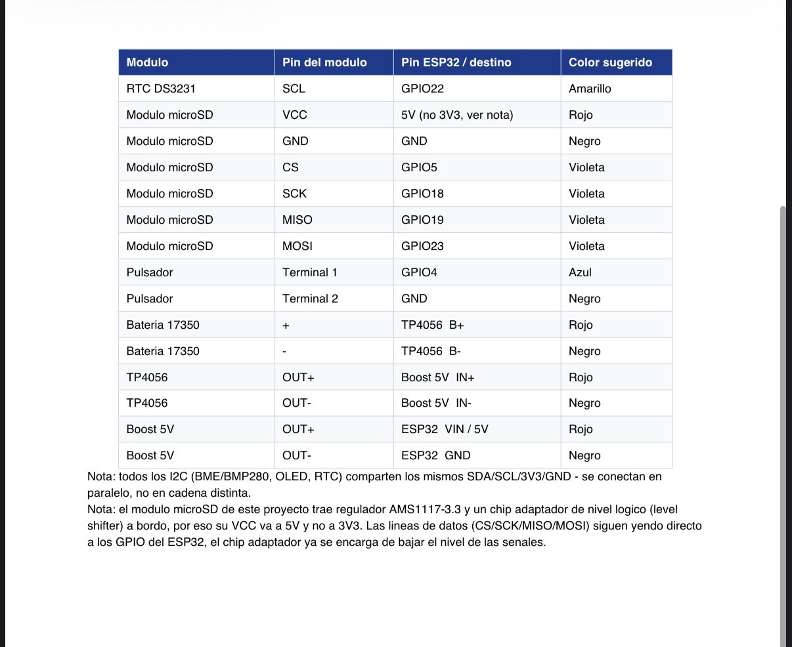

DOCUMENTACIÓN DEL PROYECTO
El proyecto, en detalle.
Consultá el documento completo dentro del sitio, con índice, tablas de requisitos y apartados pendientes identificados.
Leer documento completo Documento de origen en Google Docs ↗DATALOGGER / DOCUMENTACIÓN
Documentación técnica, planificación y código fuente. Los recursos para comprender cómo está construido el DataLogger.
DOCUMENTACIÓN DEL PROYECTO
Consultá el documento completo dentro del sitio, con índice, tablas de requisitos y apartados pendientes identificados.
Leer documento completo Documento de origen en Google Docs ↗PLANIFICACIÓN
Consultá la organización de las etapas, las tareas y los tiempos del proyecto.
Ver diagrama de GanttCÓDIGO FUENTE
Explorá el firmware, el frontend y los archivos técnicos en el repositorio del equipo.
Ver código en GitHubConsultá la tabla compartida como apoyo al montaje del proyecto.

Abrir tabla en tamaño completoREFERENCIA / API HTTP
El servidor local del ESP32 conecta las mediciones con la interfaz web a través de tres endpoints principales.
HTTP · RED LOCALGET /api/actualDevuelve la lectura actual y el estado de los módulos del sistema.
GET /api/historial?days=1Consulta las mediciones almacenadas del período solicitado; en este ejemplo, un día.
GET /api/export?days=1Obtiene los registros del período para descargarlos y utilizarlos externamente.